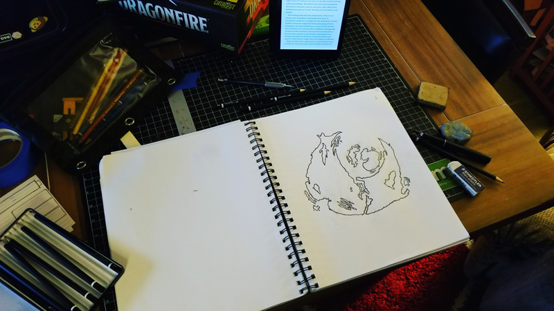
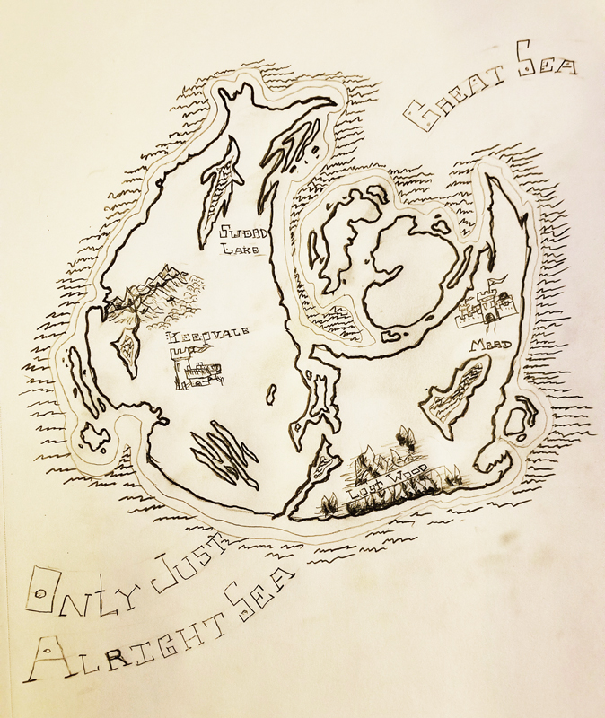
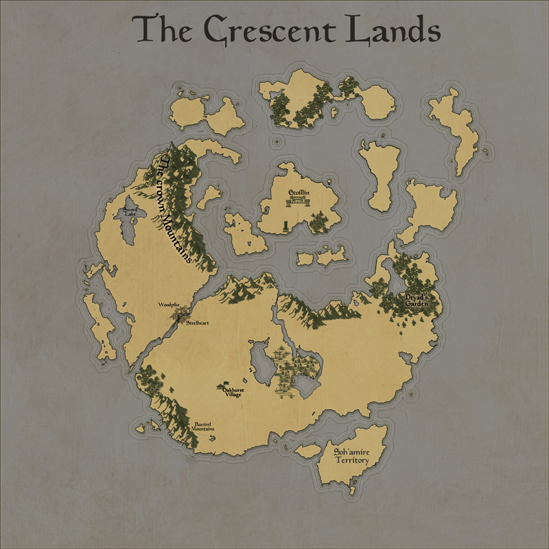
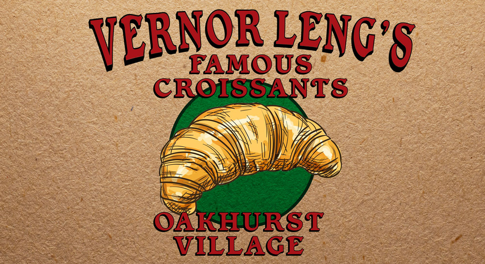
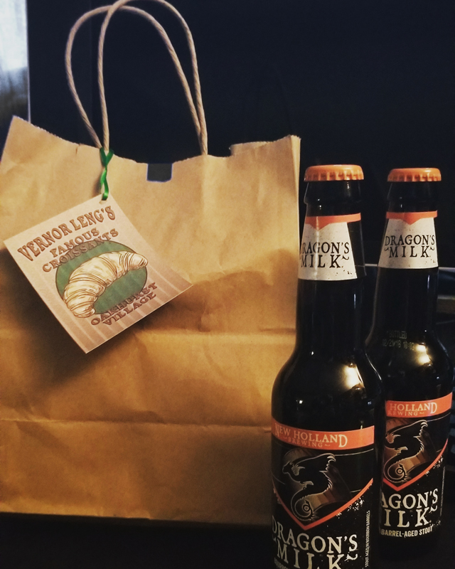
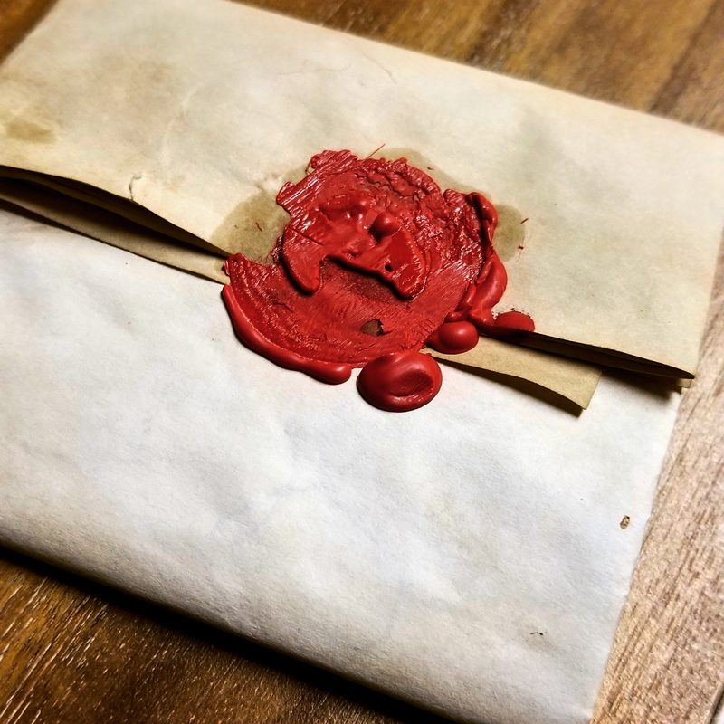

D&D Maps and
Ephemera
Map of the Crescent Lands



Vernor Leng's Famous Croissants


Croissant Wax Seal
Custom designed and 3D printed wax seal. Made on a Monoprice Maker Select Plus printer.

Custom designed and 3D printed wax seal. Made on a Monoprice Maker Select Plus printer.